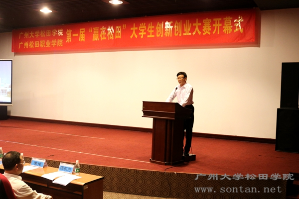
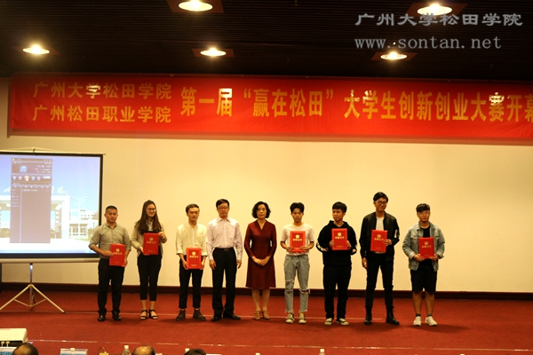
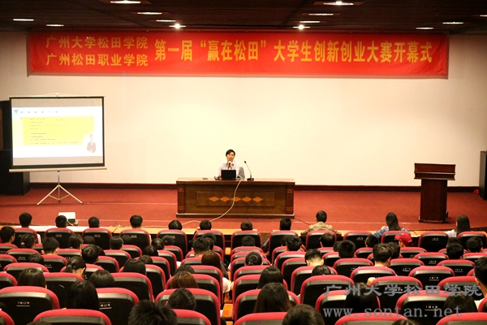

松田网讯(记者：卢金媚 通讯员：支思敏 曾晓晴)11月14日下午，松田两院第一届“赢在松田”大学生创新创业大赛开幕式暨增城区创新创业进校园专题报告会在行政楼三楼多功能厅圆满召开。我院院长助理李江凌教授，职院副院长鲁新安教授，增城区人社局七级职员朱广文、就业与职建科科长江泽、区就业中心市场科负责人李伟等五位嘉宾，各系（部）主任、优秀指导教师及获奖学生代表出席本次开幕式 。开幕式由职院院长助理饶东方主持。

院长助理李江凌在开幕式上作专题讲话
会上，李江凌院长助理就松田两院近年来创新创业教育情况作专题讲话。他表示：松田两院在积极推进教学内容和课程体系改革，大力开展各种创新创业教育活动，加强大学生创新创业训练，不断完善全院创新创业教育工作。创造条件帮助近200个优秀学生创业训练项目进行落地孵化，切实扶持我院大学生实现自主创业。希望松田两院大学生“创客”审时度势、勇担责任、积极投身创新创业实践，一起为实现中华民族伟大复兴的“中国梦”奉献磅礴的青春力量。

院长助理李江凌、职院副院长鲁新安为获得金奖项目学生团队代表颁奖
随后，松田职院鲁新安副院长宣读《广州大学松田学院、广州松田职业学院表彰2017年第三届中国“互联网+”大学生创新创业大赛校赛获奖团队及优秀指导教师》文件。鲁副院长希望：受到表彰的学生戒骄戒躁，继续加强自身理论知识，积极参与我院创新创业活动，为学院争光；受到表彰的教师继续发扬敬业乐教精神，不断提升个人工作水平，为培养更优秀的具有创新精神、创业意识与能力的中国特色社会主义建设者和接班人做出更大的贡献。

林劲斌导师为同学们讲解创业大赛参赛项目的设计要领
开幕式结束后，广州市青年就业创业导师林劲斌进行了增城区创新创业进校园专题报告会。林劲斌导师从大学生创新创业大赛项目展示三媒介、项目构成八要素、大赛冠军四启示等方面内容讲述了创业大赛参赛项目的设计要领，并与同学们分享了多个成功的创业案例，同时鼓励各位同学“仰望星空，脚踏实地”，向成为一名接地气的创业者奋斗。
松田两院承担着为“大众创业，万众创新”培养创新创业实践型人才的历史使命。利用高校教育与地方经济的资源优势，把创新创业教育作为工作的重点与核心，是松田两院一直坚持的教育方向。
|